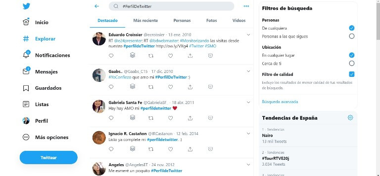

Que es Twitter |
| Twitter es una red social gratuita y cualquier persona puede crearse una cuenta o perfil para compartir opiniones. También se utiliza como fuente de información en tiempo real sobre temas de actualidad. Los usuarios de Twitter permanecen interconectados al publicar "tweets", que constan de 280 caracteres o menos y pueden contener ideas y varios tipos de información, como fotos, videos y enlaces a artículos. Los usuarios pueden acceder a estos mensajes publicados en Twitter a través de la Web o en un dispositivo móvil con conexión a Internet. |
Algunos de los usos de Twitter son:
|
|  |
Continuara...
Regresar al menu